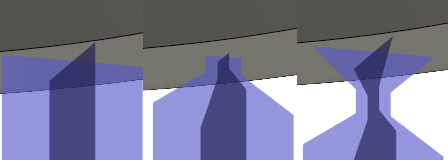

<div id="supportPropertyBar_macro_bar_breakpoint"><p>プリセットから選択するか、カスタム値を指定します。</p>
<table class="tipTable" cellspacing="10">
<tr>
<td><center></center></td>
</tr><tr>
<td><center><p><b>分割点のプリセット</b><br><em>左から: それぞれ、分割点なし、パーツの分割点、オフセット分割点になります。</em></p></center></td>
</tr></table>
</div>